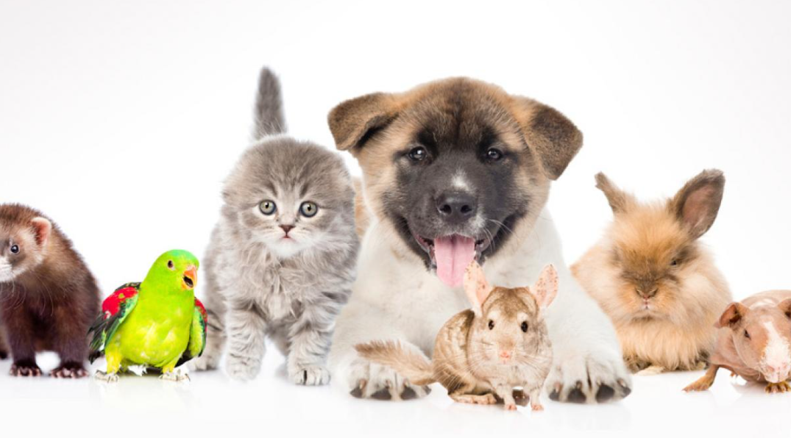

Inicio
Tener una mascota en casa va mucho más allá de simplemente compartir nuestro espacio con un animal. Las mascotas se convierten en miembros de la familia, ofreciendo compañía incondicional, alegría y afecto en cada momento del día. Además de ser nuestros compañeros fieles, las mascotas contribuyen significativamente a mejorar nuestra salud física y emocional, ayudándonos a llevar una vida más plena y equilibrada.
Desde un perro lleno de energía hasta un gato tranquilo o un pequeño pez que nada en su acuario, cada tipo de mascota tiene algo único que ofrecer. La convivencia con una mascota nos enseña el valor de la responsabilidad, la empatía y el cuidado hacia otros seres vivos, recordándonos diariamente la importancia de amar y ser amados. Como menciona la página web ANFAAC:
"En la actual sociedad, la presencia de mascotas ayuda a muchas personas a afrontar incrementos en sus niveles de estrés y ansiedad."
Resumen del sitio web
En este sitio web, encontrarás toda la información que necesitas para saber cómo elegir, cuidar y disfrutar de una mascota en tu hogar. Hemos organizado el contenido en varias secciones para facilitarte la navegación:
- Tipos de Mascotas:
- Descubre las características y necesidades de las mascotas más comunes, desde perros y gatos hasta aves, peces y especies exóticas.
- Cuidados Básicos:
- Aprende sobre la alimentación, higiene, ejercicio y salud que requiere cada tipo de mascota para garantizar una vida feliz y saludable.
- Beneficios de Tener Mascotas:
- Explora los múltiples beneficios que las mascotas pueden aportar a tu vida, incluyendo mejoras en tu salud física y bienestar emocional.
- Adopción y Responsabilidad:
- Infórmate sobre la importancia de la adopción responsable, y los compromisos que implica tener una mascota en casa.
Cada sección está diseñada para proporcionarte los conocimientos y herramientas necesarios para que la experiencia de tener una mascota sea gratificante tanto para ti como para tu nuevo compañero. ¡Esperamos que disfrutes explorando el maravilloso mundo de las mascotas!
